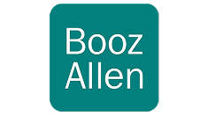

About
I’m Emily Zou, a Product Designer & Researcher, passionate about creating digital experiences that genuinely matter. My design philosophy is rooted in making solutions 🌟 responsible, ⚖️ fair, and 💡 evidence-based, because great design goes beyond aesthetics—it drives positive, lasting societal impact.
Currently, I’m shaping digital products in the fin-tech space, serving millions of diverse users. I thrive on solving complex challenges that bridge human needs with innovative digital solutions, and I’m especially drawn to mission-oriented projects that improve everyday life and align with broader societal goals. If you’re excited about creating meaningful, impactful solutions, let’s connect and make a difference together!

